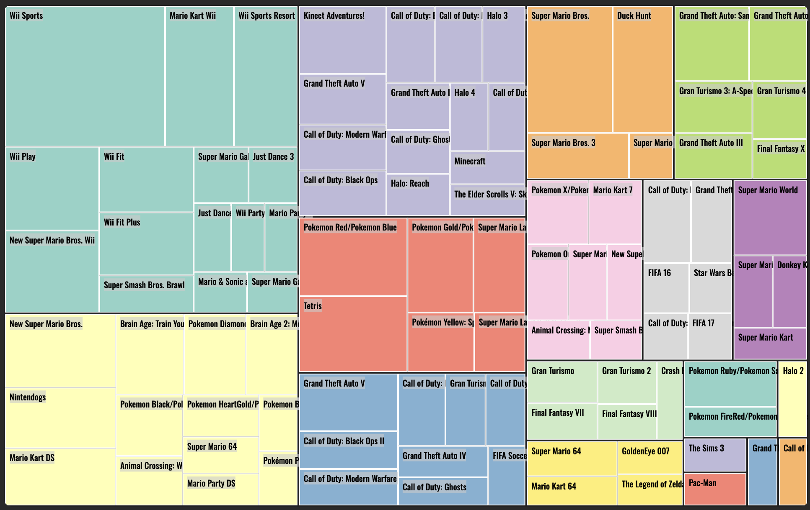
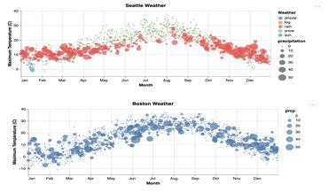
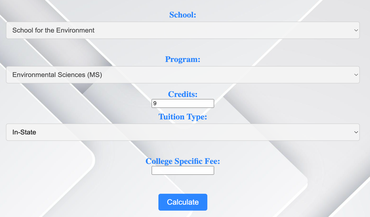
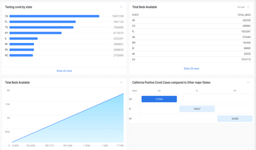

Recent work
A curated mix of analytics, dashboards, and interactive visualization work. Start with the case studies, then browse the full archive by tool and project type.
Featured Case Studies

Boston Rainfall DataViz
Interactive rainfall explorer designed to make seasonal patterns and outliers easy to compare.

UMass Boston Visualization
Tableau story built to compare campus metrics and guide review without overwhelming the viewer.

Credit Card Fraud Analysis
Notebook-based analysis focused on classification signals, imbalanced data, and risk patterns.
Project Archive
Additional work grouped by tool. Featured case studies are kept out of this archive so each project appears once in the main flow.
D3.js Projects

Tree Map - Video Games Sale
D3.js treemap that groups the top-selling video games by platform to compare category scale quickly.
SVG Projects

Boston Rainfall DataViz (SVG)
Framework-free SVG version of the rainfall visualization, focused on chart construction fundamentals.
UMass Boston Visualization (SVG, GSAP)
Animated SVG and GSAP build that explores campus comparison data through motion and direct labeling.
Tableau Projects
Massachusetts Public Schools Analysis
Tableau story for comparing public school indicators and surfacing differences across districts.
Open Source Projects

Weather App
Real-time API project with search, fetch, render, and responsive UI states for daily weather lookup.
Vega-Lite

Vega-Lite Rainfall Chart
Interactive rainfall comparison of Boston and Seattle (2013-2016).
Dunkin vs Starbucks USA
Vega-Lite comparison of Dunkin and Starbucks store distribution across the United States.
Analytics

Graduate Fee Calculator - UMass Boston
Student-facing calculator that turns tuition inputs into clearer semester and annual cost estimates.

Visualize Covid-19 Data
Snowflake and SQL dashboard work for querying public Covid-19 data and visualizing key trends.